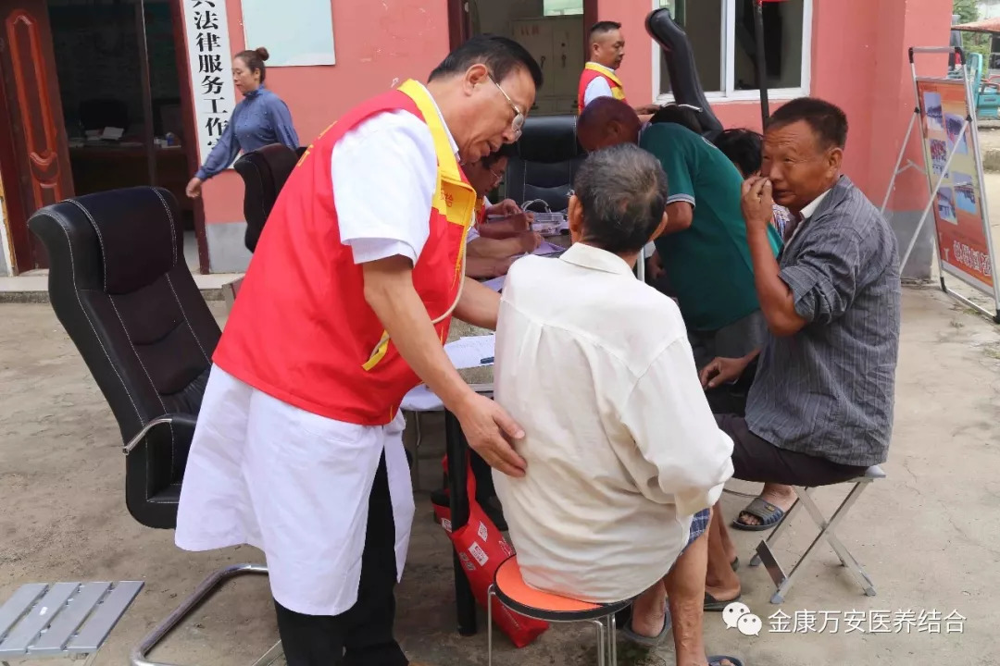
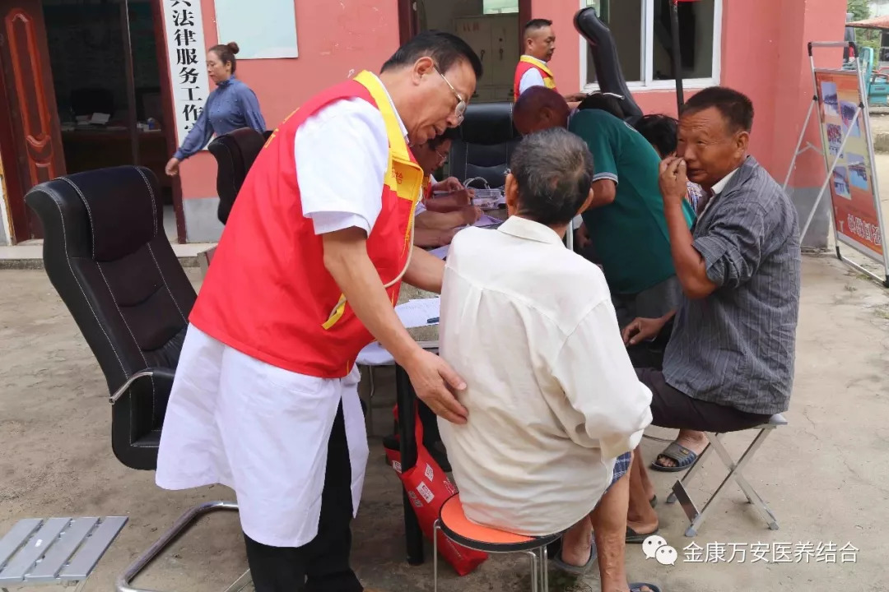

万安康复医院新闻
【金康万安●动态】漯河万安康复医院组织专家医疗团队走进大刘镇板桥村开展
“天使减贫”义诊活动。
人气: "" 时间：2018-09-13
为深化健康扶贫服务工作，给群众提供更优质的医疗服务。9月13日上午漯河万安康复医院业务院长王立信、万素华带领“天使减贫行动”服务专家团队一行十余人深入源汇区大刘镇板桥村开展健康义诊扶贫活动，把健康送到贫困群众身边，就近面对面解决群众困难，诊治群众常见病多发病，积极为贫困群众排忧解难。

漯河万安康复医院“天使减贫行动”医疗服务队由来自内科、外科、康复科、妇科的临床医生组成。到了大刘镇板桥村，医疗专家们立即开展义诊工作，专家们不顾劳累，耐心询问病情。此次开展的项目有：免费测量血压、血糖、心电图检测、彩超检查等项目。


在测量血压、血糖接诊台前排成了长队，专家们和护理人员和蔼可亲热情地服务每一位就诊群众，详细询问病史，认真进行检查，并提出科学的治疗方案。同时，专家们还为现场村民传授普及了一些农村常见病、多发病的防治及用药知识。
 



通过本次义诊活动，村民不仅在家门口享受到专家免费诊疗服务，还通过专家们的健康知识宣导普及了健康知识，起到了“天使减贫”的良好效果，有效的提升了我院对外的良好形象。


此次义诊活动赢得了村民的一致好评和信赖，一位村民对此次义诊活动赞不绝口：“这次活动组织得好，专家多，服务好，希望你们还来”。
近年来，漯河万安康复医院常态化开展面向农村、面向社区、面向基层的义诊活动，为基层老百姓带去专业的医疗服务和健康宣传，以实际行动展示金康万安的良好形象，也为我市创文工作贡献自己的微薄之力。